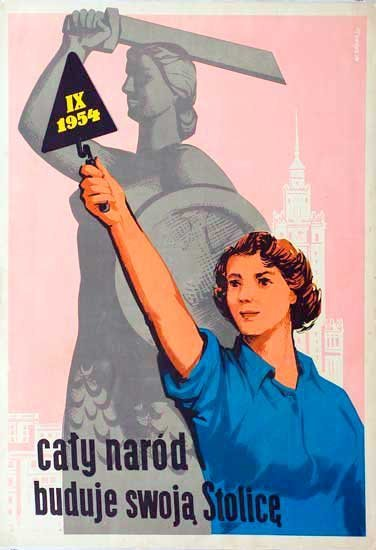
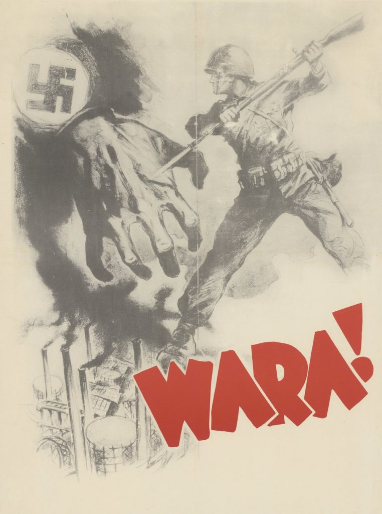

[PILNE] Pierwsze walki w Afryce...Czy marzenie Mussoliniego o odbudowie Cesarstwa Rzymskiego się ziści?
Warnet > II Wojna Światowa > Twój temat
Autor: Hubert Ziółkowski
JEST ROK 1940...WOJNA DOTARŁA AŻ DO PÓŁNOCNEJ AFRYKI
Głównym prowodyrem tych działań są Włochy. Z relacji naszych tajnych agentów wiemy,
że Mussolini marzy o przekształceniu Morza Śródziemnego we włoskie morze wewnętrzne.
Tereny przejęte przez włochy to, m.in Abisynia, Erytrea i Somali tworzące razem Włoską Afrykę Wschodnią
oraz Libia.
Z relacji świadków wiemy, że wojsko włoskie opanowało przepływ kanału Sueskiego i
przejmują szlaki transportowe Wielkiej Brytanii.
Na początku sierpnia bieżącego roku ok. 300 tysięczne siły włoskie z okupowanej Etiopii
zaatakowały i szybko opanowały Somali Brytyjskie. Jak zaskakujący w takiej sytuacji jest fakt,
że armia nie kontynuowała sukcesu ofensywy w kierunku Sudanu i Kenii tylko dopiero miesiąc później
rozpoczęła zdecydowaną ofensywę z Libii na Egipt.

Tylko kilka dni zajęło włochom wycofanie armii Brytyjskiej znad granicy.
Mimo odwrotu armii Wielkiej Brytanii, Włosi nie podjęli pościgu za oponentem.
Z przesłanych nam potajemnie listów wynika jednak, że armia Brytyjska sprowadzi w ciągu kilku dni
do Egiptu armię z Indii, Australii oraz Afryki południowej.
Z rozmowy z naczelnym dowódcą wojsk Brytyjskich możemy dowiedzieć się, że takie wsparcie
może doprowadzić do zdecydowanejk kontrofensywy i byćmoże przejęcia Libii od Włochów.
[Z OSTATNIEJ CHWILI]
Po udanej ofensywie w Libii w styczniu 1941 r. Brytyjczycy przystąpili do działań przeciwko włochom
w Somalii i Etiopii.
Początkowo wojska włoskie stawiały opór, jednak ostatecznie poddały się kapitulacji. Choć kilka z oddziałów
jeszcze stacjonuje, tak dowódctwo brytyjskie sądzi, że poddadzą się one najdalej w listopadzie...Jeżeli
wszystko pójdzie po myśli Brytyjczyków, tak Cesarstow Etiopii stanie się pierwszym wyzwolonym przez aliantów
krajem podczas II Wojny Światowej.
Koniec walk w Afryce.
Po wielu klęskach wojsk włoskich, do kampanii dołączyły Niemcy na czele z
Adolfem Hitlerem. Chcą oni przejąć kontrolę nad Egiptem i Kanałem Sueskim.
Na czele Korpusu Afrykańskiego stanął gen. Erwin Rommel. Dzięki zorganizowanej akcji
w lutym 1941 r. i udanej ofensywie, formacje brytyjskie zmuszone zostały do
wycofania się z Libii.
Jedyny punkt oporu jaki się ostał to port w Tobruku. Choć początkowo broniony
przez oddziały Australijskie, tak teraz przez Czechów, Brytyjczyków oraz Polaków.
Polscy wojowie zwani "Samodzielną Brygadą Strzelców Karpackich" zostali uwięzieni przez
okupantów jednakże przetrwają. W listopadzie 1941 r. ma zostać zorganizowana akcja uwolnienia
ich przez Brytyjczyków.
Jeżeli wszystko się uda, a Wojska Brytyjskie zasilą dodatkowe oddziały, np. ze Stanów Zjednoczonych,
będziemy mogli domniemać zwycięstwo!
[Z OSTATNIEJ CHWILI]
W październiku 1942 r. oddziały brytyjskie pod dowództwem Bernarda Montgomery'ego przeszły do ofensywy.
Niedawno miała miejsce bitwa pod El-Alamejn, w wyniku której Niemcy zostali zmuszeni do odwrotu.
Nastał czas na operację "Torch". Nasz wywiad dowiedział się, że polega ona na wysadzeniu desantu
morskiego we francuskim Maroku oraz Algierii. Dodatkowo znamy imię głównego dowódcy tej operacji...Jest nim
gen. Dwight Eisenhower.
Jego armia pokonała oddziały francuskie wierne rządowi Vichy i skłoniły je do przejścia na stronę
aliancką. Armie państw Osi wycofały się do Tunezji, gdzie zostaly sprawnie okrążone. Ostatecznie pozbawione jakiejkolwiek pomocy i zapasów.
skapitulawały w połowie maja 1943 r. W niewoli przesiaduje obecnie 275 tys. Niemców i Włochów. Dzięki temu wspaniałemu zwycięstwu, alianci
opanowali w znacznym stopniu tereny basenu Morza Śródziemnego co umożliwia im przyszły desant na Sycylię i kontynuację działań zbrojnych.


